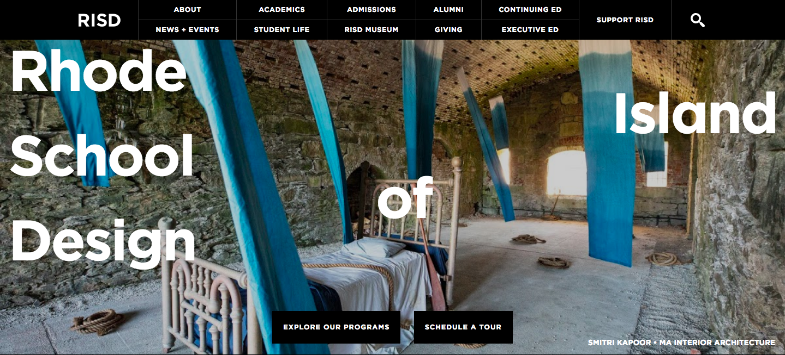
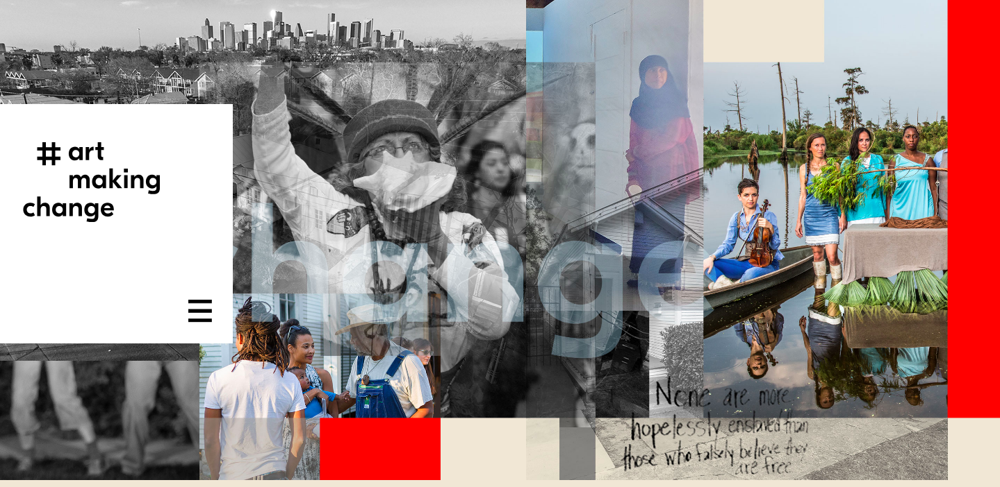

Rhode Island School of Design
Rhode Island School of Design is a renowned college in Providence, Rhode Island. Attending students are immersed in liberal art studies and studio based education. RISD offers 19 studio majors that students can pursue bachelor’s and master’s degrees in.
RISD has a unique and dynamic site that immediately engages users. Its homepage features images of student work that change every time you re-visit the page. The top bar contrasts well with the chosen images, successfully highlighting navigation features. Upon leaving the home page and entering other pages, a blue-gray pattern take the place of the background. The navigation bar finds itself in a new position to the left of the page and becomes green to contrast better with the new background. Using small blocks of text, the site displays information in a straightforward manner, making it easy for visitors to digest information. The site successfully provides positive feedback for users with features such as hovering color changes. Furthermore, it utilizes images and videos to visually support content and engage users with the site.
In comparison to Imagining America’s site, RISD is significantly more contemporary in style and voice. RISD’s color and font choices make its site more interesting and encouraging for users to navigate. Imagining America’s site features dull, uninviting colors that could potentially deter users away from the page. The images it uses seem random and without context. Moreover, the text on the page is displayed in an outdated font and conveys vague messages that leave readers lost in a string of words. Overall, Imagining America’s lack of contrast and tangible excitement fails to engage users and learn more about its mission.
Both sites attempt to convey messages about themselves within artistic contexts. However, RISD’s site successfully conveys its message in a clear and effective way that Imaging America’s fails to do so.
Art Making Change
Art Making Change acclaims itself as “a platform for exploring socially engaged art.” Its hamburger menu layouts the contents of the site: practices, projects, voices, resources, and background. Similar to RISD’s homepage, Art Making Change has a dominating, large image as the first things users see when visiting the site. Multiple images at varying opacities are layered to create the large image— the word “create” is faintly placed in the middle to emphasize the site’s mission.
The site is primarily a creamy tan color, with pops of bright colors. Throughout the site, Art Making Change consistently uses the same five colors: red, green, golden yellow, light blue, and purple. In doing so, it successfully creates a site that looks clean, but not boring. The addition of bright colors against the neutral background establish contrast, making navigation and legibility easier and more interesting. Additionally, the site primarily uses a modern sans-serif font that helps establish hierarchy in contrast with headlines written in a serif font. The sans-serif font gives the site a friendlier feel, which encourages users to continue navigating through the site.
Furthermore, Art Making Change conveys its message clearly under “practices,” where it defines “socially engaged art” and its categories. Under “projects,” it shares projects for each of the categories and highlights their components.
Relative to Imagining America, Art Making Change is more successful in delivering its message and keeping users engaged. The two sites share similar color themes— however, where those of Art Making Change’s are brighter, those of Imagining America’s are duller. In both color and image use, Art Making Change’s site includes more interesting, relevant elements, making it more friendly and approachable. Overall, Art Making Change has a more successful layout and method for delivering information, making it easier to navigate the site and understand their mission.